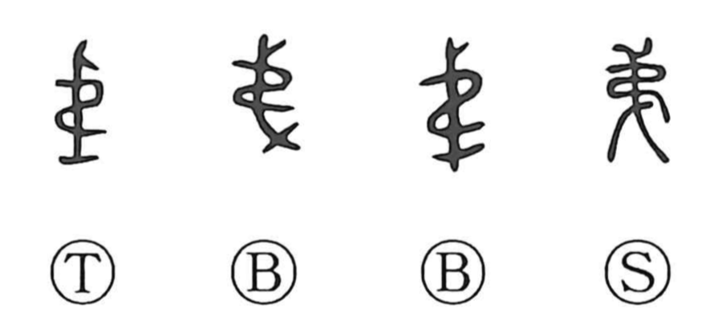

弟

Kun: otouto | On: tei, dai, de
younger brother ・ order ・ sequence
Explanation
弟 pictures something bound with a leather thong. The successive turns fasten it in an orderly way, giving the early sense of sequence: one turn follows another in its proper place.
This order extends to the children of a family, arranged by age. 弟 comes to mean the younger brother, the child who follows another in the sequence. It can also refer more generally to someone younger or be used modestly of oneself.
第 was formed later by adding 竹 to the binding image, specifying bamboo writing strips arranged in order. It took over the explicit ordinal use, while 弟 became familiar chiefly through the relationship between siblings.